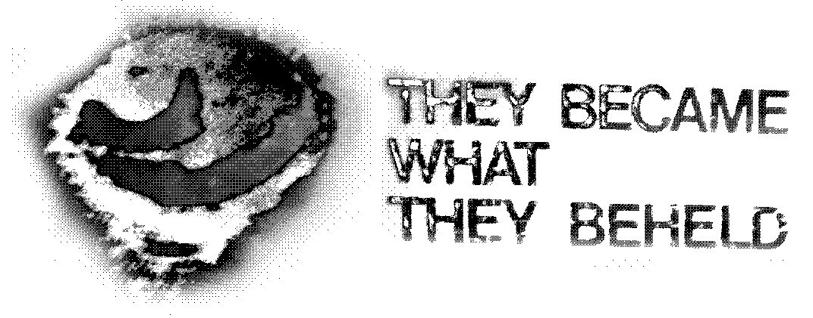

 They Became What They Beheld
Dangerous business, these orchestral loops. Dangerous, dangerous business...
Music
Video
- Distance, 2024
- Exegesis, 2024
- Vast Active Living Intelligence System, 2024
- Rocket Summer, 2024
- Respect for the Medium, 2024
- This changes things, 2024
- Nothing is real anymore, 2024
- That was closer to then, 2022
- Live @ The End of the World, 2022
- Everything is everywhere now, 2019
About
- They Became What They Beheld is Tyler Etters, a midwesterner holed-up in the mountains by Los Angeles.
- If you enjoy the work please consider downloading from Bandcamp and backing it up locally.
- It is all streamable. Just search for it on your platform of choice.
Meta